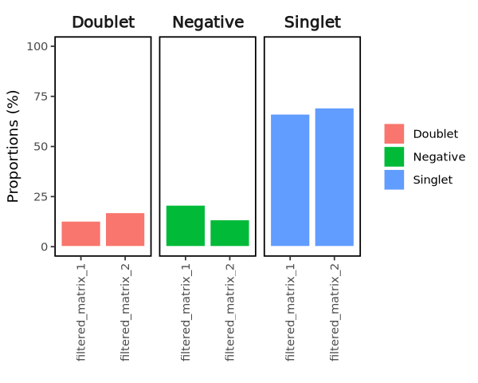
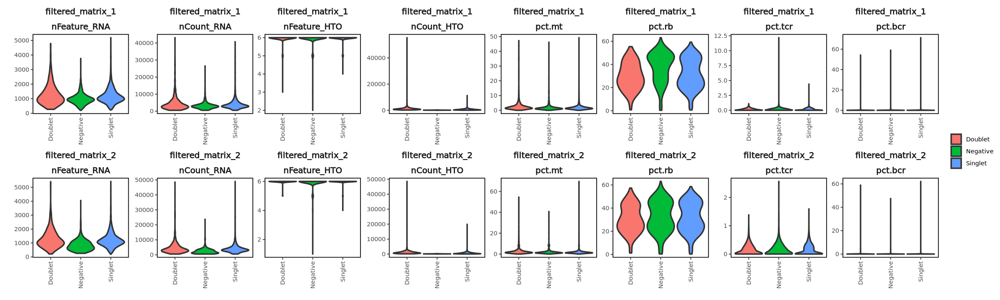
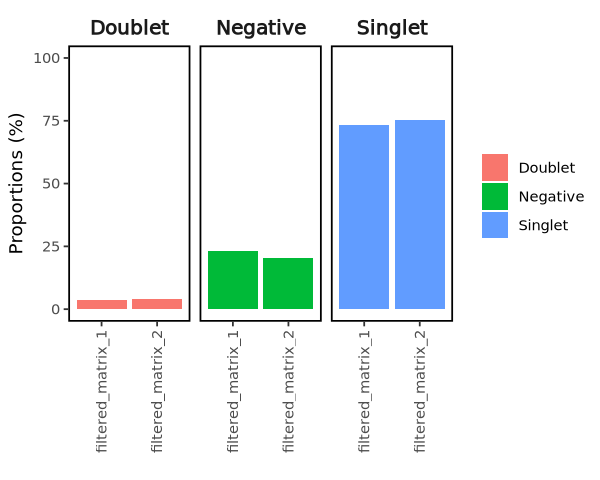
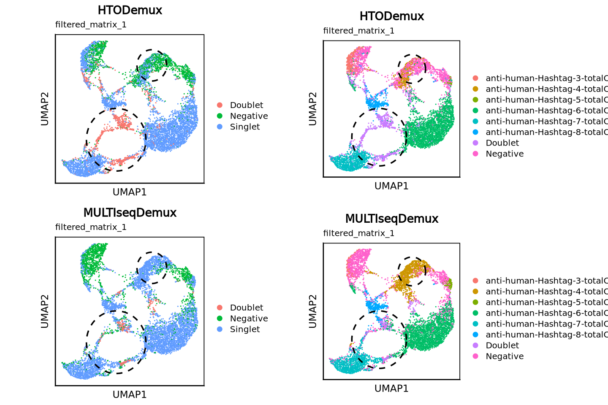
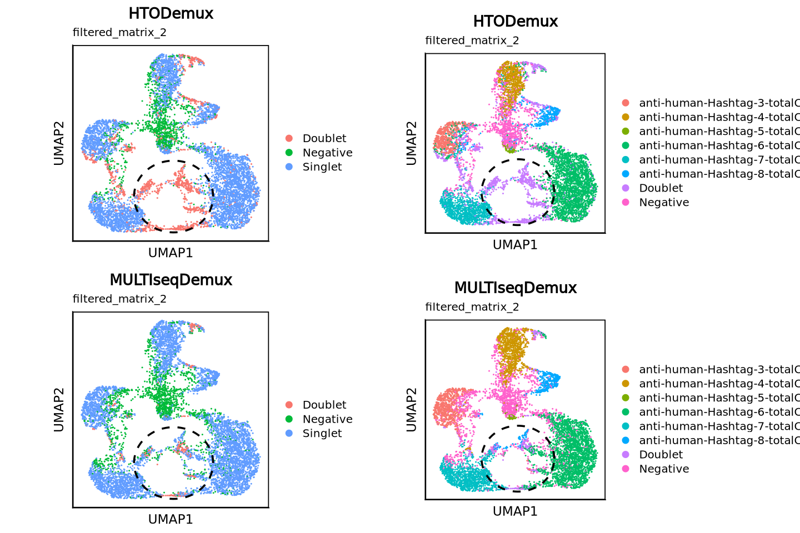
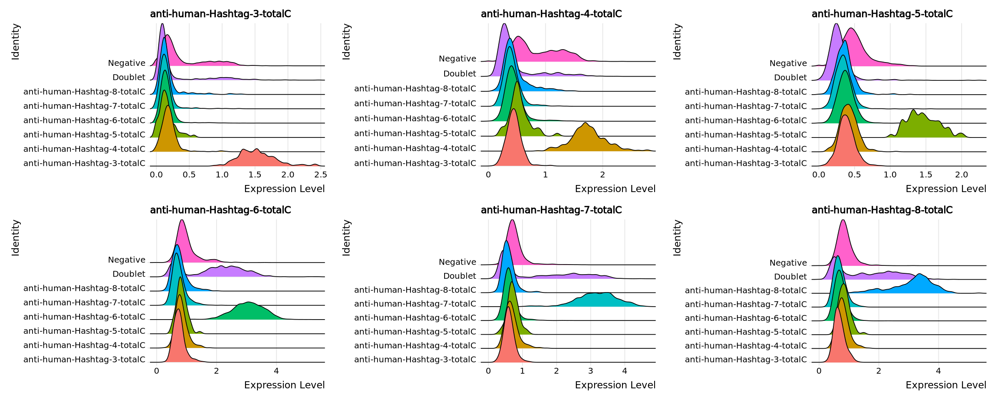
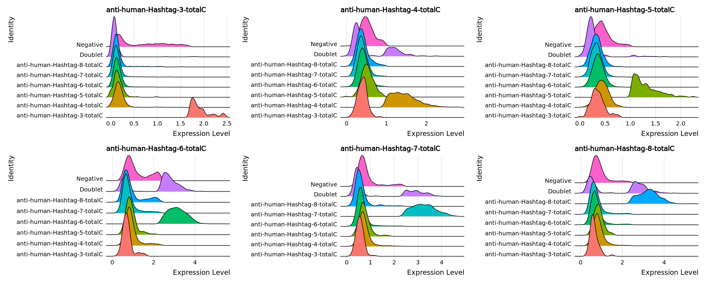
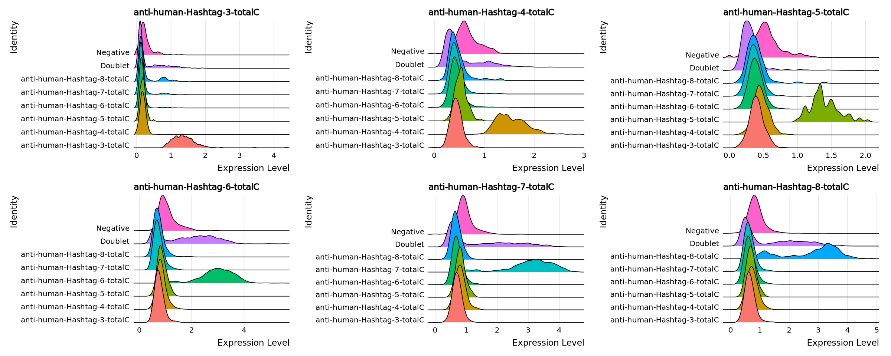
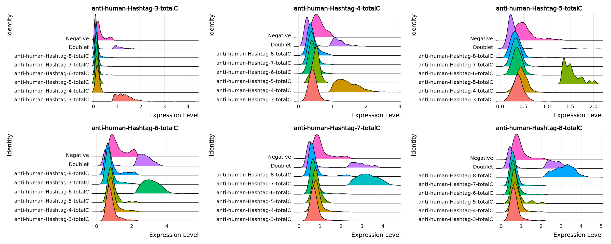

## set up environment
suppressMessages({
source("/camp/home/hungm/working/Matthew/library/R/functions/Seurat/processing.R")
source("/camp/home/hungm/working/Matthew/library/R/functions/Seurat/plotting.R")
setwd("/nemo/lab/caladod/working/Matthew/project/matthew/MH_GSE155224")})
## load seurat objects
obj_list <- qread("seurat/20240825_GSE155224_raw.qs")5 Cell Demultiplexing
Motivation
For this dataset, each sample is comprised of cells from multiple patients hashtagged with a unique oligo sequence. To demultiplex which patient the cells were retrieved from, a demultiplexing algorithm must be used to quantify the oligo sequences for each cell and assign each cell to a patient. The most common approaches to date is using the HTOdemux [Stoeckius et al.; 2018] or the MULTIseqDemux [McGinnis et al.; 2019] algorithms. Besides assigning each cell back to each patient, these algorithms are able to identify homolytic/heterolytic “Doublet” and “Negative” cells based on high/multiple and low oligo counts respectively. These poor quality droplets are a common issue with droplet-based sequencing when there are multiple or no cells found in each droplet, and removal of these droplets could prevent false-positive findings.
obj_list$filtered_matrix_1
An object of class Seurat
17028 features across 7502 samples within 3 assays
Active assay: RNA (16828 features, 0 variable features)
1 layer present: counts
2 other assays present: HTO, ADT
$filtered_matrix_2
An object of class Seurat
17301 features across 8227 samples within 3 assays
Active assay: RNA (17101 features, 0 variable features)
1 layer present: counts
2 other assays present: HTO, ADT5.1 Calculate Gene Fractions
Before demultiplexing, we need to first calculate the fraction of mitochondrial, ribosomal, haemoglobin, T/B-cell recepter (TCR/BCR) and MHC reads to identify poor quality cells, which can be informative of accurate demultiplexing. The function below will perform the calculations of key parameters that identifies poor quality cells.
Please navigate to the next chapter <Quality Control> for a detailed explanation of the wrapper function, outputs, and interpretations.
## calculate gene fractions (mt, rb, hb, tcr, bcr)
for(x in 1:length(obj_list)){
obj_list[[x]] <- calculate_fractions(obj_list[[x]])}5.2 Inpect HTO Counts
Before demultiplexing HTO library, we will inspect and remove any redundant/low expressing hashtags. For each sample, below we will quantify 1) how many cells expresses each tag; 2) number of counts for each tag.
Quantification show that Hashtag-1 and Hashtag-2 are pretty much not expressed. Indeed for these sequencing runs, the author did not tag cells with Hashtag-1 and Hashtag-2. However author did not remove these Tags during cellranger-multi processing, hence some false-positive counts.
## Calculate how many cells expresses each tag
metalist <- list()
for(x in 1:length(obj_list)){
metalist[[x]] <- data.frame(apply(obj_list[[x]][["HTO"]]$counts, 1, function(row) sum(row != 0)))
colnames(metalist[[x]]) <- names(obj_list)[x]}
metalist <- bind_cols(metalist)
metalist| filtered_matrix_1 | filtered_matrix_2 | |
|---|---|---|
| <int> | <int> | |
| anti-human-Hashtag-1-totalC | 59 | 86 |
| anti-human-Hashtag-2-totalC | 39 | 60 |
| anti-human-Hashtag-3-totalC | 7234 | 8044 |
| anti-human-Hashtag-4-totalC | 7494 | 8221 |
| anti-human-Hashtag-5-totalC | 7485 | 8212 |
| anti-human-Hashtag-6-totalC | 7501 | 8226 |
| anti-human-Hashtag-7-totalC | 7501 | 8224 |
| anti-human-Hashtag-8-totalC | 7500 | 8225 |
## Calculate number of counts for each tag
metalist <- list()
for(x in 1:length(obj_list)){
metalist[[x]] <- data.frame(rowSums(obj_list[[x]][["HTO"]]$counts))
colnames(metalist[[x]]) <- names(obj_list)[x]}
metalist <- bind_cols(metalist)
metalist| filtered_matrix_1 | filtered_matrix_2 | |
|---|---|---|
| <dbl> | <dbl> | |
| anti-human-Hashtag-1-totalC | 60 | 86 |
| anti-human-Hashtag-2-totalC | 40 | 60 |
| anti-human-Hashtag-3-totalC | 93205 | 118714 |
| anti-human-Hashtag-4-totalC | 173037 | 210110 |
| anti-human-Hashtag-5-totalC | 93560 | 120365 |
| anti-human-Hashtag-6-totalC | 2220085 | 2496495 |
| anti-human-Hashtag-7-totalC | 1170763 | 1525116 |
| anti-human-Hashtag-8-totalC | 775182 | 786222 |
We will now remove those redundant tags from the “HTO” assay.
for(x in 1:length(obj_list)){
features <- c("anti-human-Hashtag-1-totalC", "anti-human-Hashtag-2-totalC")
obj_list[[x]] <- remove_genes(obj_list[[x]], features = features, orig.assay = "HTO", new.assay = "remove")
obj_list[[x]][["remove"]] <- NULL}
obj_listWarning message:
“Different cells and/or features from existing assay HTO”
Warning message:
“Different cells and/or features from existing assay HTO”$filtered_matrix_1
An object of class Seurat
17026 features across 7502 samples within 3 assays
Active assay: HTO (6 features, 0 variable features)
1 layer present: counts
2 other assays present: RNA, ADT
$filtered_matrix_2
An object of class Seurat
17299 features across 8227 samples within 3 assays
Active assay: HTO (6 features, 0 variable features)
1 layer present: counts
2 other assays present: RNA, ADT5.3 HTODemux
First we will run the the wrapper function below to demultiplex the cells with the HTODemux algorithm in default settings.
## add one pseudocount to each oligo to run HTODemux without error
for(x in 1:length(obj_list)){
obj_list[[x]] <- htodemux(obj_list[[x]], add.one = T)}Normalizing layer: counts
Normalizing across cells
Cutoff for anti-human-Hashtag-3-totalC : 46 reads
Cutoff for anti-human-Hashtag-4-totalC : 66 reads
Cutoff for anti-human-Hashtag-5-totalC : 38 reads
Cutoff for anti-human-Hashtag-6-totalC : 122 reads
Cutoff for anti-human-Hashtag-7-totalC : 120 reads
Cutoff for anti-human-Hashtag-8-totalC : 88 reads
Normalizing layer: counts
Normalizing across cells
Cutoff for anti-human-Hashtag-3-totalC : 19 reads
Cutoff for anti-human-Hashtag-4-totalC : 38 reads
Cutoff for anti-human-Hashtag-5-totalC : 40 reads
Cutoff for anti-human-Hashtag-6-totalC : 119 reads
Cutoff for anti-human-Hashtag-7-totalC : 101 reads
Cutoff for anti-human-Hashtag-8-totalC : 105 reads
Below we will visualize the output from HTODemux to inspect the quality of the demultiplexing algorithm. We quantified the percentage of “Singlet”, “Doublet” and “Negative” cells (empty droplets or cells with no tags) for each sample.
HTODemux is able to assign > 65% of cells as “Singlets” for both samples.
## Aggregate HTODemux output into a dataframe
metalist <- list()
for(x in seq_along(obj_list)){
metalist[[x]] <- obj_list[[x]]@meta.data}
metalist <- bind_rows(metalist)
## Quantify % of Singlet cells left from each sample
metalist_qc <- metalist %>%
group_by(samples, HTO_classification.global) %>%
summarize(count = n()) %>%
group_by(samples) %>%
mutate(pct = count*100/sum(count)) %>%
filter(!HTO_classification.global %in% c("Doublet", "Negative")) %>%
group_by(samples) %>%
summarize(pct = sum(pct))
metalist_qc| samples | pct |
|---|---|
| <chr> | <dbl> |
| filtered_matrix_1 | 66.27566 |
| filtered_matrix_2 | 69.35700 |
## Visualizde % of Singlet cells left from each sample
options(repr.plot.width=5, repr.plot.height=4)
metalist %>%
group_by(samples, HTO_classification.global) %>%
summarize(count = n()) %>%
group_by(samples) %>%
mutate(pct = count*100/sum(count)) %>%
ggplot(aes(x = samples, y = pct, fill = HTO_classification.global)) +
geom_col(color = "white") +
facet_wrap(~HTO_classification.global) +
guides(fill = guide_legend(title = "")) +
theme_bw() +
ylim(c(0, 100)) +
theme(axis.text.x = element_text(angle = 90, vjust = 0.5, hjust=1)) +
xlab("") +
ylab("Proportions (%)") +
theme_border() +
facet_aes()
In addition, we can inspect different parameter below to see if “Doublet” and “Negative” cells are assigned appropriately. Low nFeature/nCount typically indicate if the droplet is empty, hence “Negative”. Vice versa, high nFeature/nCount indicate “Doublet” cells as mRNA contents in a droplet is doubled.
Looking at nFeature_RNA & nCounts_RNA mainly, HTODemux assignment do accurately reflect nature of the “Negative” and “Doublet” cells in our case.
## inspect filtering parameters for the problematic samples
options(repr.plot.width=20, repr.plot.height= 6)
cols <- c("nFeature_RNA", "nCount_RNA", "nFeature_HTO", "nCount_HTO", "pct.mt", "pct.rb", "pct.tcr", "pct.bcr")
metalist %>%
filter(!is.na(HTO_classification.global)) %>%
pivot_longer(cols = all_of(cols), names_to = "measures", values_to = "values") %>%
mutate(measures = factor(measures, cols)) %>%
ggplot(aes(x = HTO_classification.global, y = values, fill = HTO_classification.global)) +
geom_violin(size = 1, scale = "width", bw = "nrd0", position=position_dodge(0.75), trim = T, drop = F, adjust = 1.5) +
facet_wrap(~samples + measures, scales = "free", ncol = 8) +
theme_bw() +
theme(axis.text.x = element_text(angle = 90, vjust = 0.5, hjust=1)) +
guides(fill = guide_legend(title = "")) +
xlab("") +
ylab("") +
theme_border() +
facet_aes()
5.4 MULTIseqDemux
Next we also will also implement MULTIseqDemux algorithm as a benchmark.
## run MULTIseqDemux
for(x in 1:length(obj_list)){
obj_list[[x]] <- multiseqdemux(obj_list[[x]], add.one = F)}Normalizing layer: counts
Normalizing across cells
Normalizing layer: counts
Normalizing across cells
Below we will visualize the output from MULTIseqDemux to inspect the quality of demultiplexing. Again we quantified the percentage of “Singlet”, “Doublet” and “Negative” cells for each sample. > Compared to HTODemux, all samples have > 70% of cells assigned as “Singlet”.
## Aggregate MULTIseqDemux output into a dataframe
metalist <- list()
for(x in seq_along(obj_list)){
metalist[[x]] <- obj_list[[x]]@meta.data}
metalist <- bind_rows(metalist)
## Quantify % of Singlet cells left from each sample
metalist_qc <- metalist %>%
group_by(samples, MULTI.global) %>%
summarize(count = n()) %>%
group_by(samples) %>%
mutate(pct = count*100/sum(count)) %>%
filter(!MULTI.global %in% c("Doublet", "Negative")) %>%
group_by(samples) %>%
summarize(pct = sum(pct))
metalist_qc| samples | pct |
|---|---|
| <chr> | <dbl> |
| filtered_matrix_1 | 73.14050 |
| filtered_matrix_2 | 75.37377 |
## Visualize % of Singlet cells left from each sample
options(repr.plot.width=5, repr.plot.height=4)
metalist %>%
group_by(samples, MULTI.global) %>%
summarize(count = n()) %>%
group_by(samples) %>%
mutate(pct = count*100/sum(count)) %>%
ggplot(aes(x = samples, y = pct, fill = MULTI.global)) +
geom_col() +
facet_wrap(~MULTI.global) +
guides(fill = guide_legend(title = "")) +
ylim(c(0, 100)) +
theme_bw() +
theme(axis.text.x = element_text(angle = 90, vjust = 0.5, hjust=1)) +
xlab("") +
ylab("Proportions (%)") +
theme_border() +
facet_aes()
Again, we can inspect different parameter below to see if “Doublet” and “Negative” cells are assigned appropriately.
Looking at nFeature and nCounts again, nCounts and nFeatures of “Negative” cells are substantially lower than “Singlet” cells, wheres “Doublets” are much higher than “Singlet” cells. Compared to HTODemux, MULTIseqDemux may better capture true “Singlet” cells.
## inspect filtering parameters for the problematic samples
options(repr.plot.width=20, repr.plot.height= 6)
cols <- c("nFeature_RNA", "nCount_RNA", "nFeature_HTO", "nCount_HTO", "pct.mt", "pct.rb", "pct.tcr", "pct.bcr")
metalist %>%
filter(!is.na(MULTI.global)) %>%
pivot_longer(cols = all_of(cols), names_to = "measures", values_to = "values") %>%
mutate(measures = factor(measures, cols)) %>%
ggplot(aes(x = MULTI.global, y = values, fill = MULTI.global)) +
geom_violin(size = 1, scale = "width", bw = "nrd0", position=position_dodge(0.75), trim = T, drop = F, adjust = 1.5) +
facet_wrap(~samples + measures, scales = "free", ncol = 8) +
theme_bw() +
theme(axis.text.x = element_text(angle = 90, vjust = 0.5, hjust=1)) +
guides(fill = guide_legend(title = "")) +
xlab("") +
ylab("") +
theme_border() +
facet_aes()
5.5 Evaluate Output
When there are more than 5 HTO hashtags, we can perform a umap visualization to evaluate which method could best predict “Singlet” cells.
## make sure there are more than 5 HTO tags
nrow(obj_list[[1]][["HTO"]])
nrow(obj_list[[2]][["HTO"]])
6
6
## process HTO counts
obj_list <- process_hto(obj_list)Found more than one class "dist" in cache; using the first, from namespace 'BiocGenerics'
Also defined by ‘spam’
Found more than one class "dist" in cache; using the first, from namespace 'BiocGenerics'
Also defined by ‘spam’
Found more than one class "dist" in cache; using the first, from namespace 'BiocGenerics'
Also defined by ‘spam’
Found more than one class "dist" in cache; using the first, from namespace 'BiocGenerics'
Also defined by ‘spam’
UMAP below shows that MULTIseqDemux assigned a large cluster of cells as tags in both sequencing runs rather than “Doublet/Negative” to HTODemux. HTODemux has been suggested to predict more false-positive doublets compared to MULTIseqDemux (see GitHub & Paper)
# set hash ID as factors
for(x in 1:length(obj_list)){
obj_list[[x]]$hash.ID <- factor(obj_list[[x]]$hash.ID, levels(obj_list[[x]]$MULTI_ID))}## Visualize HTODemux & MULTIseqDemux assignment for filtered_matrix_1
options(repr.plot.width=12, repr.plot.height= 8)
plist <- list()
plist[[length(plist) + 1]] <- scUMAP(obj_list[[1]], reduction = "umap_hto", group.by = "HTO_classification.global") + ggtitle("HTODemux", subtitle = "filtered_matrix_1" )
plist[[length(plist) + 1]] <- scUMAP(obj_list[[1]], reduction = "umap_hto", group.by = "hash.ID") + ggtitle("HTODemux", subtitle = "filtered_matrix_1")
plist[[length(plist) + 1]] <- scUMAP(obj_list[[1]], reduction = "umap_hto", group.by = "MULTI.global") + ggtitle("MULTIseqDemux", subtitle = "filtered_matrix_1")
plist[[length(plist) + 1]] <- scUMAP(obj_list[[1]], reduction = "umap_hto", group.by = "MULTI_ID") + ggtitle("MULTIseqDemux", subtitle = "filtered_matrix_1")
r = 2; xc = 2; yc = 6
for(x in seq_along(plist)){
plist[[x]] <- plist[[x]] +
annotate("path",
x=xc+r*cos(seq(0,2*pi,length.out=100)),
y=yc+r*sin(seq(0,2*pi,length.out=100)),
size = 1,
linetype = "dashed")}
r = 4; xc = -2.8; yc = -3.5
for(x in seq_along(plist)){
plist[[x]] <- plist[[x]] +
annotate("path",
x=xc+r*cos(seq(0,2*pi,length.out=100)),
y=yc+r*sin(seq(0,2*pi,length.out=100)),
size = 1,
linetype = "dashed")}
plot_grid(plotlist = plist, ncol = 2)
## Visualize HTODemux & MULTIseqDemux assignment for filtered_matrix_2
options(repr.plot.width=12, repr.plot.height= 8)
plist <- list()
plist[[length(plist) + 1]] <- scUMAP(obj_list[[2]], reduction = "umap_hto", group.by = "HTO_classification.global") + ggtitle("HTODemux", subtitle = "filtered_matrix_2" )
plist[[length(plist) + 1]] <- scUMAP(obj_list[[2]], reduction = "umap_hto", group.by = "hash.ID") + ggtitle("HTODemux", subtitle = "filtered_matrix_2")
plist[[length(plist) + 1]] <- scUMAP(obj_list[[2]], reduction = "umap_hto", group.by = "MULTI.global") + ggtitle("MULTIseqDemux", subtitle = "filtered_matrix_2")
plist[[length(plist) + 1]] <- scUMAP(obj_list[[2]], reduction = "umap_hto", group.by = "MULTI_ID") + ggtitle("MULTIseqDemux", subtitle = "filtered_matrix_2")
r = 3.5; xc = -0; yc = -3.5
for(x in seq_along(plist)){
plist[[x]] <- plist[[x]] +
annotate("path",
x=xc+r*cos(seq(0,2*pi,length.out=100)),
y=yc+r*sin(seq(0,2*pi,length.out=100)),
size = 1,
linetype = "dashed")}
plot_grid(plotlist = plist, ncol = 2)
5.6 Separation of HTO Signal
Furthermore we will inspect the hashtag signal for the demultiplexed cells in both samples to determine whether HTODemux or MULTIseqDemux is better.
MULTIseqDemux can separate signals from individual tags better for both sequencing runs, especially for Hashtag-8.
## Ridge plot of each hashtag in demultiplexed cells for filtered_matrix_1
options(repr.plot.width=20, repr.plot.height= 8)
RidgePlot(obj_list[[1]], assay = "HTO", group.by = "hash.ID", features = rownames(obj_list[[1]][["HTO"]]), ncol = 3)
RidgePlot(obj_list[[1]], assay = "HTO", group.by = "MULTI_ID", features = rownames(obj_list[[1]][["HTO"]]), ncol = 3)Picking joint bandwidth of 0.0327
Picking joint bandwidth of 0.0447
Picking joint bandwidth of 0.0344
Picking joint bandwidth of 0.0754
Picking joint bandwidth of 0.0755
Picking joint bandwidth of 0.0844
Picking joint bandwidth of 0.0336
Picking joint bandwidth of 0.0523
Picking joint bandwidth of 0.0353
Picking joint bandwidth of 0.0992
Picking joint bandwidth of 0.0899
Picking joint bandwidth of 0.0971


## Ridge plot of each hashtag in demultiplexed cells for filtered_matrix_2
options(repr.plot.width=20, repr.plot.height= 8)
RidgePlot(obj_list[[2]], assay = "HTO", group.by = "hash.ID", features = rownames(obj_list[[2]][["HTO"]]), ncol = 3)
RidgePlot(obj_list[[2]], assay = "HTO", group.by = "MULTI_ID", features = rownames(obj_list[[2]][["HTO"]]), ncol = 3)Picking joint bandwidth of 0.0303
Picking joint bandwidth of 0.04
Picking joint bandwidth of 0.031
Picking joint bandwidth of 0.074
Picking joint bandwidth of 0.0729
Picking joint bandwidth of 0.0874
Picking joint bandwidth of 0.0271
Picking joint bandwidth of 0.0471
Picking joint bandwidth of 0.0306
Picking joint bandwidth of 0.0961
Picking joint bandwidth of 0.0849
Picking joint bandwidth of 0.089


In the following chapters, we will continue subsequent analysis using MULTIseqDemux output rather than HTODemux.
Session Info
qsave(obj_list, "seurat/20240826_GSE155224_demux.qs")sessionInfo()R version 4.3.2 (2023-10-31)
Platform: x86_64-conda-linux-gnu (64-bit)
Running under: Rocky Linux 8.7 (Green Obsidian)
Matrix products: default
BLAS/LAPACK: /nemo/lab/caladod/working/Matthew/.conda/envs/seurat5/lib/libopenblasp-r0.3.23.so; LAPACK version 3.11.0
locale:
[1] LC_CTYPE=en_GB.UTF-8 LC_NUMERIC=C
[3] LC_TIME=en_GB.UTF-8 LC_COLLATE=en_GB.UTF-8
[5] LC_MONETARY=en_GB.UTF-8 LC_MESSAGES=en_GB.UTF-8
[7] LC_PAPER=en_GB.UTF-8 LC_NAME=C
[9] LC_ADDRESS=C LC_TELEPHONE=C
[11] LC_MEASUREMENT=en_GB.UTF-8 LC_IDENTIFICATION=C
time zone: Europe/London
tzcode source: system (glibc)
attached base packages:
[1] stats4 grid stats graphics grDevices utils datasets
[8] methods base
other attached packages:
[1] qs_0.26.3 viridis_0.6.4
[3] viridisLite_0.4.2 ggalluvial_0.12.5
[5] ggnewscale_0.4.9 ggrepel_0.9.4
[7] UCell_2.4.0 writexl_1.4.2
[9] readxl_1.4.3 wesanderson_0.3.6.9000
[11] ComplexHeatmap_2.16.0 cluster_2.1.4
[13] lmtest_0.9-40 zoo_1.8-12
[15] binaryLogic_0.3.9 jaccard_0.1.0
[17] RColorBrewer_1.1-3 celda_1.16.1
[19] Matrix_1.6-1 SingleCellExperiment_1.24.0
[21] SummarizedExperiment_1.32.0 Biobase_2.62.0
[23] GenomicRanges_1.54.1 GenomeInfoDb_1.38.0
[25] IRanges_2.36.0 S4Vectors_0.40.1
[27] BiocGenerics_0.48.0 MatrixGenerics_1.14.0
[29] matrixStats_1.0.0 ggpubr_0.6.0
[31] rstatix_0.7.2 gridExtra_2.3
[33] scales_1.3.0 clustree_0.5.0
[35] ggraph_2.1.0 cowplot_1.1.1
[37] patchwork_1.2.0 SeuratDisk_0.0.0.9021
[39] tonsilref.SeuratData_2.0.0 pbmcref.SeuratData_1.0.0
[41] pbmc3k.SeuratData_3.1.4 SeuratData_0.2.2.9001
[43] Seurat_5.0.0 SeuratObject_5.0.0
[45] sp_2.1-1 lubridate_1.9.3
[47] forcats_1.0.0 stringr_1.5.0
[49] dplyr_1.1.4 purrr_1.0.2
[51] readr_2.1.4 tidyr_1.3.0
[53] tibble_3.2.1 ggplot2_3.5.1
[55] tidyverse_2.0.0 biomaRt_2.58.0
loaded via a namespace (and not attached):
[1] igraph_1.5.1 ica_1.0-3
[3] plotly_4.10.3 zlibbioc_1.48.0
[5] tidyselect_1.2.0 bit_4.0.5
[7] doParallel_1.0.17 clue_0.3-64
[9] lattice_0.21-8 rjson_0.2.21
[11] blob_1.2.4 S4Arrays_1.2.0
[13] parallel_4.3.2 png_0.1-8
[15] cli_3.6.1 goftest_1.2-3
[17] BiocNeighbors_1.18.0 uwot_0.1.16
[19] curl_5.1.0 mime_0.12
[21] evaluate_0.23 leiden_0.4.3
[23] stringi_1.7.12 backports_1.4.1
[25] assertive.numbers_0.0-2 XML_3.99-0.14
[27] httpuv_1.6.12 AnnotationDbi_1.64.0
[29] magrittr_2.0.3 rappdirs_0.3.3
[31] splines_4.3.2 RApiSerialize_0.1.2
[33] ggbeeswarm_0.7.2 sctransform_0.4.1
[35] DBI_1.1.3 withr_2.5.2
[37] assertive.base_0.0-9 tidygraph_1.2.3
[39] htmlwidgets_1.6.2 IRkernel_1.3.2
[41] labeling_0.4.3 SparseArray_1.2.0
[43] cellranger_1.1.0 reticulate_1.34.0
[45] XVector_0.42.0 timechange_0.2.0
[47] foreach_1.5.2 fansi_1.0.5
[49] data.table_1.14.8 R.oo_1.25.0
[51] RSpectra_0.16-1 irlba_2.3.5.1
[53] ggrastr_1.0.2 fastDummies_1.7.3
[55] gridGraphics_0.5-1 ellipsis_0.3.2
[57] lazyeval_0.2.2 survival_3.5-7
[59] scattermore_1.2 crayon_1.5.2
[61] RcppAnnoy_0.0.21 IRdisplay_1.1
[63] progressr_0.14.0 tweenr_2.0.2
[65] later_1.3.1 ggridges_0.5.4
[67] assertive.types_0.0-3 codetools_0.2-19
[69] base64enc_0.1-3 GlobalOptions_0.1.2
[71] KEGGREST_1.42.0 Rtsne_0.16
[73] shape_1.4.6 filelock_1.0.2
[75] pkgconfig_2.0.3 xml2_1.3.5
[77] spatstat.sparse_3.0-3 multipanelfigure_2.1.2
[79] xtable_1.8-4 car_3.1-2
[81] plyr_1.8.9 httr_1.4.7
[83] tools_4.3.2 globals_0.16.2
[85] beeswarm_0.4.0 broom_1.0.5
[87] nlme_3.1-163 dbplyr_2.4.0
[89] hdf5r_1.3.8 digest_0.6.33
[91] farver_2.1.1 tzdb_0.4.0
[93] reshape2_1.4.4 WriteXLS_6.4.0
[95] glue_1.6.2 cachem_1.0.8
[97] BiocFileCache_2.10.1 polyclip_1.10-6
[99] generics_0.1.3 Biostrings_2.70.1
[101] parallelly_1.36.0 RcppHNSW_0.5.0
[103] carData_3.0-5 pbapply_1.7-2
[105] assertive.properties_0.0-5 spam_2.10-0
[107] utf8_1.2.4 assertive.files_0.0-2
[109] graphlayouts_1.0.0 ggsignif_0.6.4
[111] RcppEigen_0.3.3.9.3 shiny_1.7.5.1
[113] GenomeInfoDbData_1.2.11 R.utils_2.12.2
[115] RCurl_1.98-1.12 memoise_2.0.1
[117] R.methodsS3_1.8.2 future_1.33.0
[119] RANN_2.6.1 stringfish_0.16.0
[121] spatstat.data_3.0-3 spatstat.utils_3.0-5
[123] hms_1.1.3 fitdistrplus_1.1-11
[125] munsell_0.5.0 colorspace_2.1-0
[127] rlang_1.1.3 dotCall64_1.1-0
[129] ggforce_0.4.1 circlize_0.4.15
[131] iterators_1.0.14 abind_1.4-5
[133] MCMCprecision_0.4.0 repr_1.1.6
[135] bitops_1.0-7 promises_1.2.1
[137] RSQLite_2.3.2 qvalue_2.32.0
[139] DelayedArray_0.28.0 pbdZMQ_0.3-9
[141] compiler_4.3.2 prettyunits_1.2.0
[143] listenv_0.9.0 Rcpp_1.0.11
[145] enrichR_3.2 tensor_1.5
[147] MASS_7.3-60 progress_1.2.2
[149] uuid_1.1-1 BiocParallel_1.36.0
[151] spatstat.random_3.2-1 R6_2.5.1
[153] fastmap_1.1.1 vipor_0.4.5
[155] ROCR_1.0-11 gtable_0.3.4
[157] KernSmooth_2.23-22 miniUI_0.1.1.1
[159] deldir_1.0-9 htmltools_0.5.6.1
[161] RcppParallel_5.1.7 bit64_4.0.5
[163] spatstat.explore_3.2-5 lifecycle_1.0.3
[165] vctrs_0.6.4 spatstat.geom_3.2-7
[167] future.apply_1.11.0 pillar_1.9.0
[169] magick_2.8.1 combinat_0.0-8
[171] jsonlite_1.8.7 GetoptLong_1.0.5